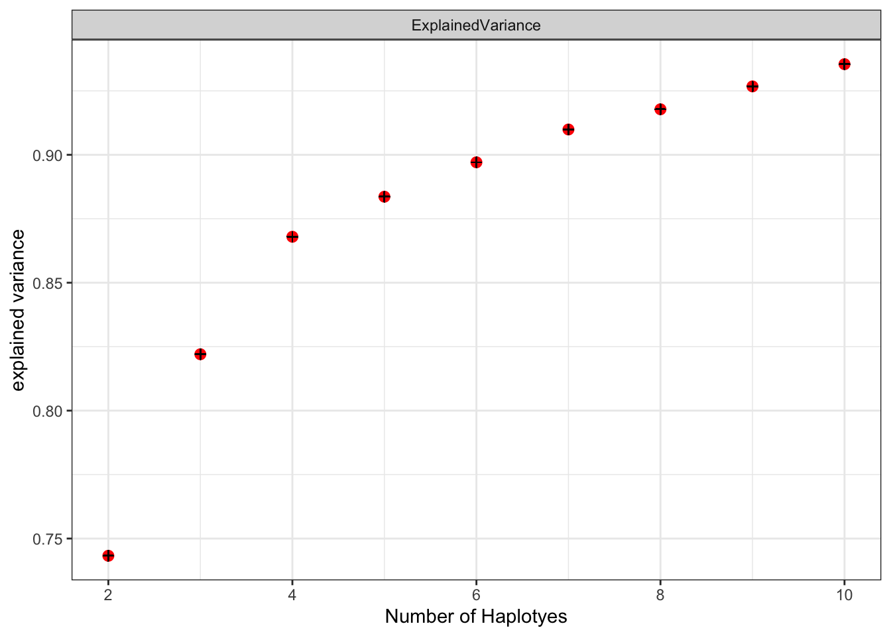
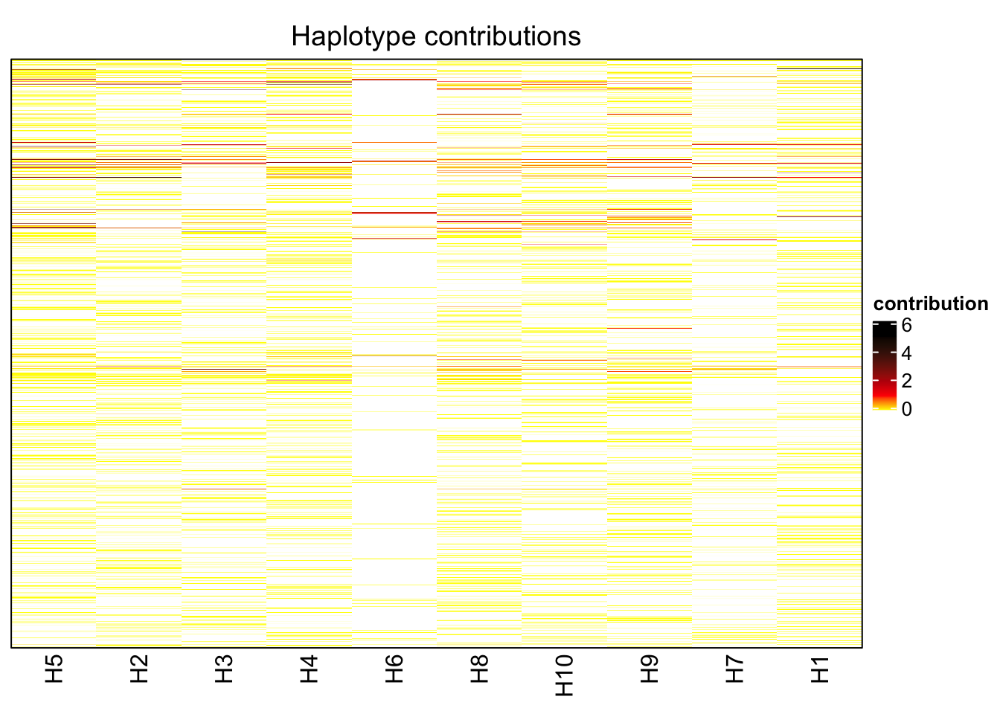
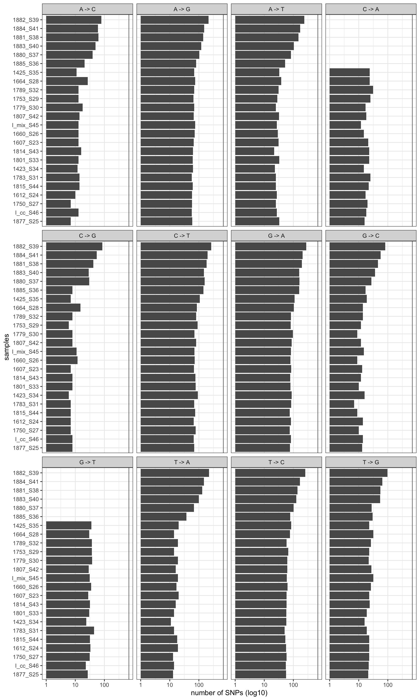

Section 7 Comparision of lofreq and varscan
without E. Coli
dat.lo <- readRDS("data/rds/variants_lofreq.rds")
dat.lo <- dat.lo[which(dat.lo$ecoli== FALSE),]
dat.va <- readRDS("data/rds/variants_varscan.rds")
dat.va <- dat.va[which(dat.va$ecoli== FALSE),]
dat.va$dummy <- 1
dat.lo$dummy <- 1
dat.va.by.sample.genome <- aggregate(dummy ~ mouse.id + genome, dat.va, sum)
dat.va.by.sample.genome$type <- "varscan"
dat.lo.by.sample.genome <- aggregate(dummy ~ mouse.id + genome, dat.lo, sum)
dat.lo.by.sample.genome$type <- "lofreq"
joined.df <- rbind(dat.lo.by.sample.genome, dat.va.by.sample.genome)
p <- ggplot(joined.df, aes(x = mouse.id, y=dummy, fill = type))
p <- p + scale_y_log10() + xlab("Mouse ID") + ylab("number of variants") + theme_classic()
p <- p + geom_bar(stat = "identity", position = position_dodge2(preserve = "single")) + facet_wrap(~ genome)
p
7.1 major allele frequency
7.1.1 all samples and all genomes
7.1.1.1 lofreq
without E. Coli
p <- ggplot(dat.lo, aes(x = majorAF, y = mouse.id))
p <- p + ggridges::geom_density_ridges(jittered_points = TRUE,
position = ggridges::position_points_jitter(width = 0.01, height = 0),
point_shape = '|', point_size = 1, point_alpha = 0.5, alpha = 0.1)
p <- p + theme_classic()
p <- p + theme(strip.background = element_blank())
p <- p + xlab("Major allele frequency") + ylab("Count")
p## Picking joint bandwidth of 0.0632
7.1.1.2 varscan
p <- ggplot(dat.va, aes(x = majorAF, y = mouse.id))
p <- p + ggridges::geom_density_ridges(jittered_points = TRUE,
position = ggridges::position_points_jitter(width = 0.01, height = 0),
point_shape = '|', point_size = 1, point_alpha = 0.5, alpha = 0.1)
p <- p + theme_classic()
p <- p + theme(strip.background = element_blank())
p <- p + xlab("Major allele frequency") + ylab("Count")
p## Picking joint bandwidth of 0.0263
7.1.2 by sample and genome
7.1.2.1 lofreq
plotAFofSample <- function(dat = dat.lo) {
p <- ggplot(dat, aes(x = majorAF, y = genome, color = genome))
p <- p + ggridges::geom_density_ridges(jittered_points = TRUE,
position = ggridges::position_points_jitter(width = 0.01, height = 0),
point_shape = '|', point_size = 2, point_alpha = 1, alpha = 0.1)
p <- p + facet_wrap(~desc)
p <- p + theme_classic() + scale_color_manual(values = omm_colors)
#p <- p + facet_grid(phase ~., space = "free", scales= "free")
p <- p + theme(strip.background = element_blank())
p <- p + xlab("Major allele frequency") + ylab("Genome")
return(p)
}
suppressWarnings(plotAFofSample(dat.lo))## Picking joint bandwidth of 0.0565## Picking joint bandwidth of 0.0601## Picking joint bandwidth of 0.0492## Picking joint bandwidth of 0.0549## Picking joint bandwidth of 0.0513## Picking joint bandwidth of 0.0366## Picking joint bandwidth of 0.0626## Picking joint bandwidth of 0.0767## Picking joint bandwidth of 0.0482
7.1.2.2 varscan
plotAFofSample <- function(dat = dat) {
p <- ggplot(dat, aes(x = majorAF, y = genome, color = genome))
p <- p + ggridges::geom_density_ridges(jittered_points = TRUE,
position = ggridges::position_points_jitter(width = 0.01, height = 0),
point_shape = '|', point_size = 2, point_alpha = 1, alpha = 0.1)
p <- p + facet_wrap(~desc)
p <- p + theme_classic() + scale_color_manual(values = omm_colors)
#p <- p + facet_grid(phase ~., space = "free", scales= "free")
p <- p + theme(strip.background = element_blank())
p <- p + xlab("Major allele frequency") + ylab("Genome")
return(p)
}
suppressWarnings(plotAFofSample(dat.va))## Picking joint bandwidth of 0.028## Picking joint bandwidth of 0.0449## Picking joint bandwidth of 0.0393## Picking joint bandwidth of 0.0418## Picking joint bandwidth of 0.0378## Picking joint bandwidth of 0.0364## Picking joint bandwidth of 0.0488## Picking joint bandwidth of 0.0475## Picking joint bandwidth of 0.0356